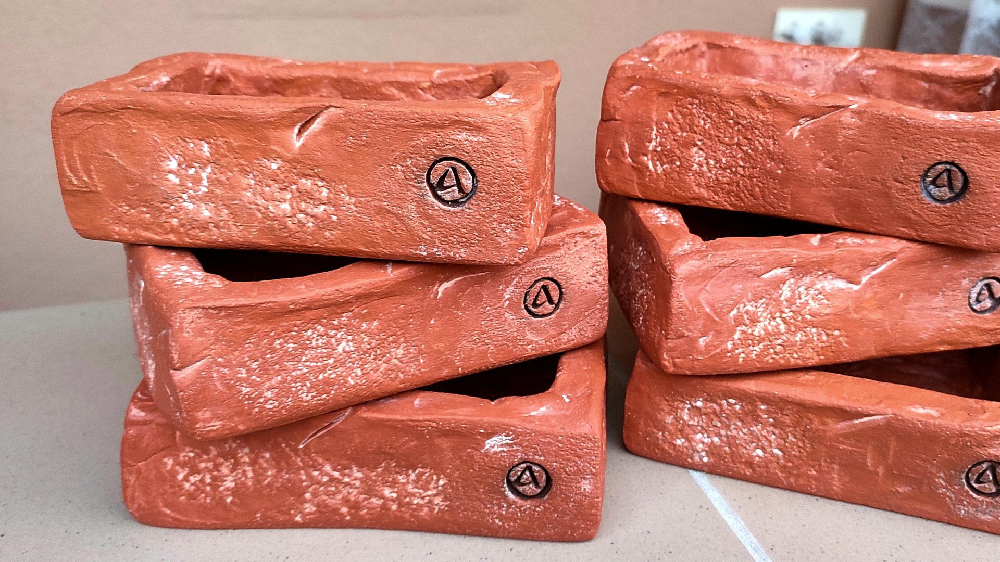
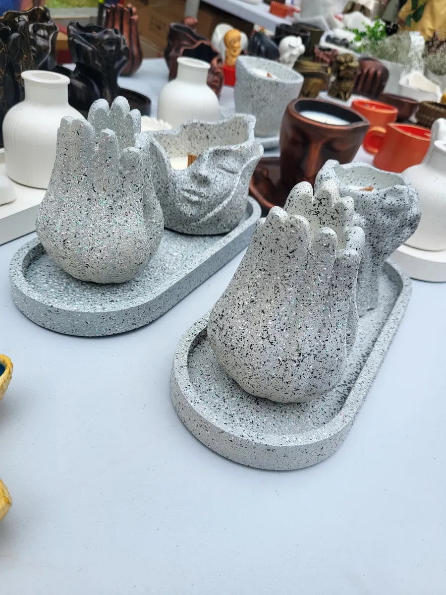
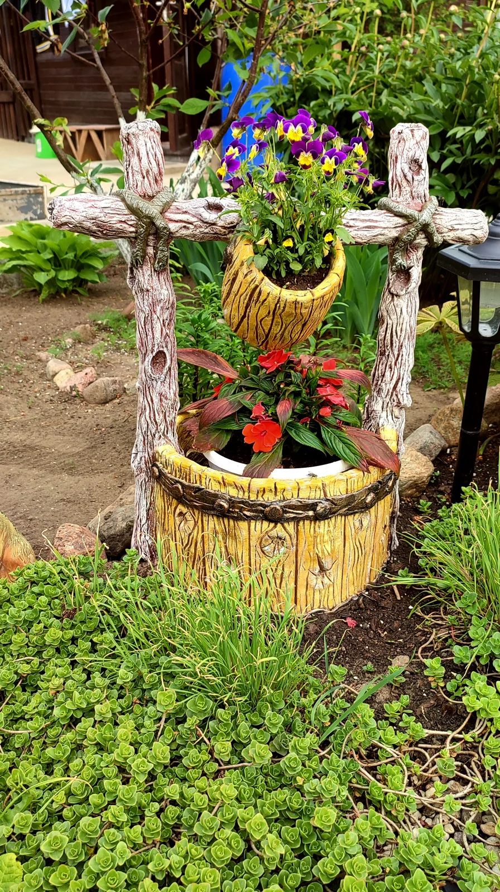
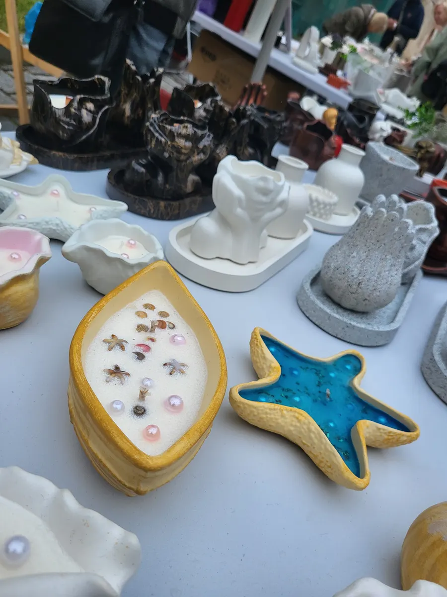
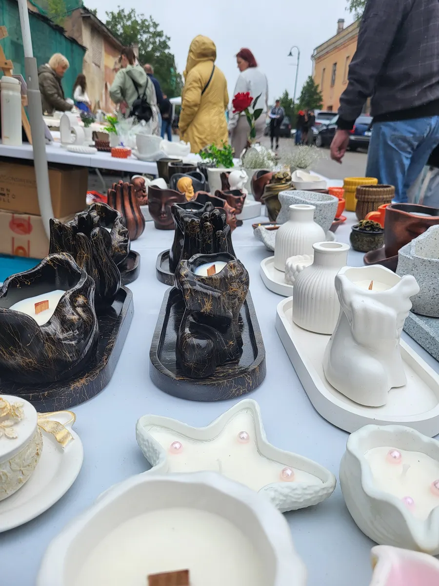

Tēlniecības ģipsis + baltais cements
Līdzsvars, kas dod monumentālu izturību.

Mūsu stāsts
Stāsts par pagalmu Daugavpilī, rokām, kas nevar nosēdēt mierā, un recepti, ko nododam tālāk.
1. nodaļa · Pagalms
Daugavpilī ir pagalms, kur ziemā sniegs krājas pie sētas un pavasarī ceriņi zied pie šķūņa durvīm.
Pagalma vidū stāv mūsu darbnīca: ģipša maisi blakus pigmentu burciņām, veidnes plauktos un vienmēr dabīgā vaska smarža. Tās ir mūsu mājas — un katrs darbs nes līdzi daļiņu no tām.

2. nodaļa · Oļega rokas
Oļegs strādā pēc sajūtām. Lej akmeni, veido ģipsi, krāso ar minerālajām krāsām.
Kad viņš veido plaukstas, kas tur sirdi, viņš iespiež savus pirkstu nospiedumus mitrajā materiālā, ieklāj pigmentu katrā rievā un pulē malas, līdz tās pareizi uztver Baltijas gaismu.


3. nodaļa · Ģimenes recepte
Parasts ģipsis ir trausls. Tāpēc mēs izveidojām savu izturīga akmens kompozīta recepti.
Līdzsvars, kas dod monumentālu izturību.
Attīrīts silīcija dioksīds aizpilda pat mazākās poras.
Izvada lieko ūdeni un gaisu — masa kļūst monolīta.
Katrs lielais darbs tiek stiegrots, lai iztur Latvijas ziemas.
Ģipsis, baltais cements un mikrosilīcijs — mūsu pašu sastāvs, ko jaucam ar rokām katrai partijai.
Masu lejam veidnē lēni, lai neiekļūst gaiss. Lielākos darbus armējam.
Malas, faktūras un nospiedumus veidojam ar rokām, kamēr akmens vēl ir mīksts.
Darbs nesteidzīgi sacietē plauktos. Steiga to padarītu trauslu.
Minerālās krāsas un zelta detaļas klājam ar otu — katru toni atsevišķi.
Katru darbu iesaiņojam paši un pievienojam kopšanas kartīti.
4. nodaļa · Mazie palīgi
Pēcpusdienās darbnīcā atskan mazi soļi un jautājumi: “Kāpēc šai svecei ir zelta pārslas?”
Alisijai ir savas mīļākās krāsas — vienmēr mirdzošās. Nikolass pārbauda izturību: “Vai šī ir pietiekami stipra maniem dinozauriem?” Kad pakojam darbus tirdziņiem, piedalās visa ģimene.


5. nodaļa · Mūsu ceļš
Oļegs sāk ar stiepļu skulptūrām un maziem betona podiem pagalma šķūnī.
Pirmie botāniskie un minerālu ieslēgumi. Sāk veidoties mūsu rokraksts.
Piedzimst Alisija, pēc tam Nikolass. Darbnīca kļūst par ģimenes telpu.
Sirds formas sveces izpārdotas Ziemassvētku tirdziņā Rīgā.
Atsevišķa krāsošanas vieta un žāvēšanas telpa. Vairāk darbu, tā pati rūpība.
Daugavpils darbnīca atver durvis visai Eiropai.
6. nodaļa · Mantojumi
Videi draudzīgākā lieta, kas jums var piederēt, ir tā, ko nekad neizmetīsiet.
Kad svece izdeg, trauks paliek — kļūst par mājvietu sukulentiem, gredzenu glabātuvi vai atmiņu turētāju. Mēs netaisām traukus. Mēs taisām ģimenes dārgumus, kas sāk savu ceļu kā sveces.
7. nodaļa · Nāciet ciemos
Gribat redzēt, kur viss notiek? Uzrakstiet mums, un sarunāsim laiku apmeklējumam darbnīcā Daugavpilī.